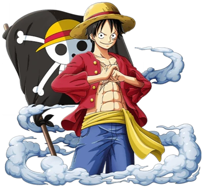
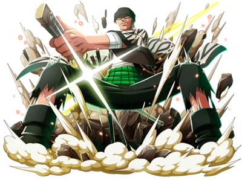
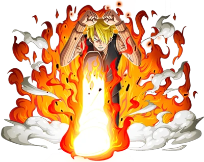
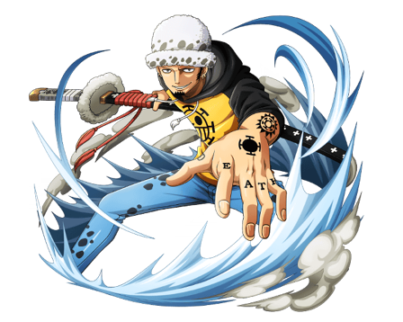
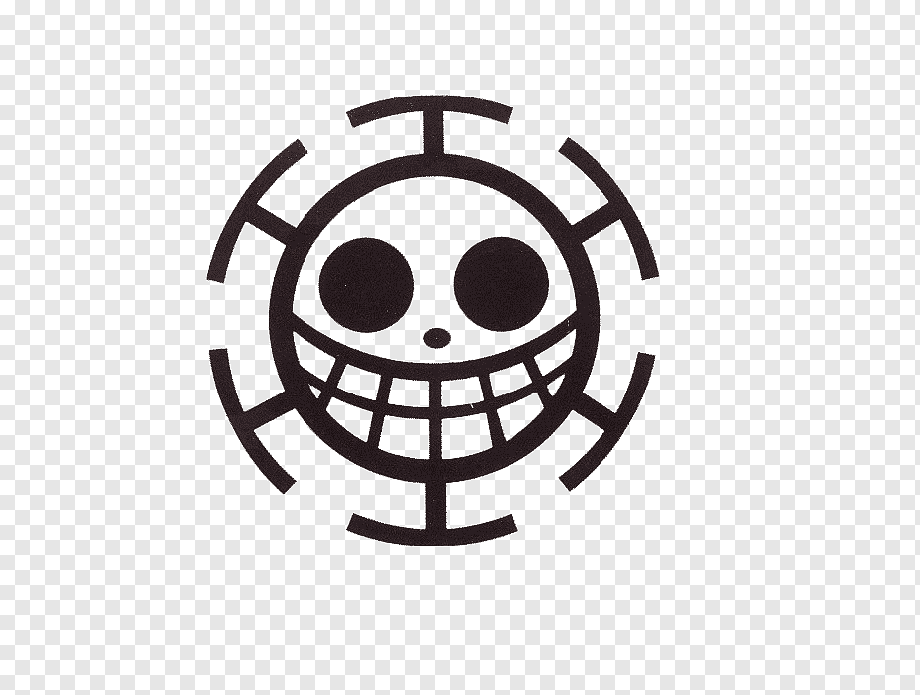

Alguns Personagens

Monkey D. Luffy
- também conhecido como Luffy Chapéu de Palha ou Chapéu de Palha, é um pirata e o protagonista do anime e mangá One Piece, Ele é o fundador e o capitão do cada vez mais infame e poderoso Piratas do Chapéu de Palha


Roronoa Zoro
- também conhecido como "Caçador de Piratas" Zoro, é o combatente dos Piratas do Chapéu de Palha e um ex-caçador de recompensas. Ele foi o primeiro membro a juntar-se à tripulação. Sua fama como mestre espadachim e sua grande força, juntamente com as ações de seu capitão

Vinsmoke Sanji
- também conhecido como "Perna Negra" Sanji, e também é o cozinheiro dos Piratas do Chapéu de Palha, assim como um antigo chefe de cozinha do Baratie. Ele também é o terceiro filho e a quarta criança da Família Vinsmoke, tornando-o um príncipe do Reino Germa

Trafalgar D. Water Law
- mais comumente conhecido como apenas Trafalgar Law e por seu epíteto como o "Cirurgião da Morte", é um pirata do North Blue e capitão e médico dos Piratas Heart. Ele é um dos doze piratas que são referidos como a "Pior Geração"
